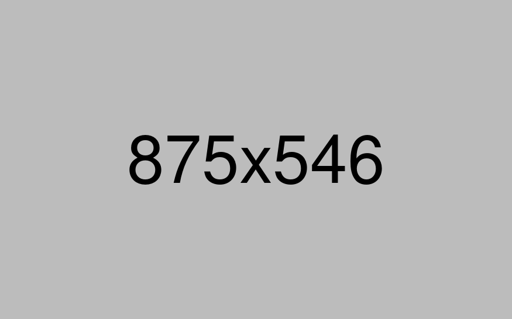

Unconventional Materials in Architecture

Architecture is constantly evolving, and as such, the materials used in construction have changed over time. Builders are always looking for innovative ways to push the boundaries of design and functionality, and unconventional materials have become increasingly popular in recent years.

Unconventional materials are being used in architecture to create structures that are not only aesthetically pleasing but also environmentally friendly, cost-effective, and sustainable.
In a world that's constantly evolving, our innovative architecture helps you stay ahead of the curve and live your best life.
Another unconventional material that is gaining traction in architecture is recycled materials. Using recycled materials in construction is a great way to reduce waste and minimize the impact on the environment.
Sustainability . Design . Functionality . Aesthetics . Innovation . Creativity . Engineering . Construction . Planning . Urbanism . Environment . Materials . Style . Minimalism .
Modernism . Postmodernism . Classicism . Art Deco . Baroque . Renaissance . Eclectic . Futurism . Deconstructivism . Parametricism . Vernacular . Adaptation . Renovation .
Restoration . Preservation . Conservation . Landscaping . Public space . Civic design . Infrastructure . Housing . Apartments . Villas . Skyscrapers . Towers . Stadiums . Museums .
Art galleries . Libraries . Schools . Universities . Hospitals . Laboratories . Offices . Retail spaces . Shopping centers . Malls .
Drop us a line
info@arktemplate.co
give us a call
0911 225 9047